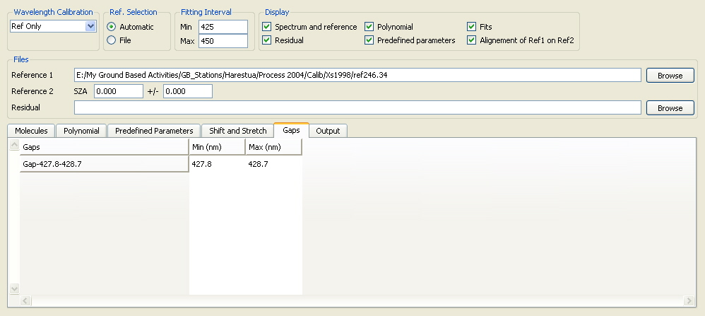

QDOAS Analysis Windows properties : Gaps page

Gaps can be introduced in order to eliminate bad pixels from the fitting interval.
To insert a gap, right-click the Insert option and complete the Min (nm) and Max (nm) columns with the limits given in nanometers. The first column is automatically updated after validation of the entry fields. To remove a gap, select it in the Gaps column and right-click the Remove option.